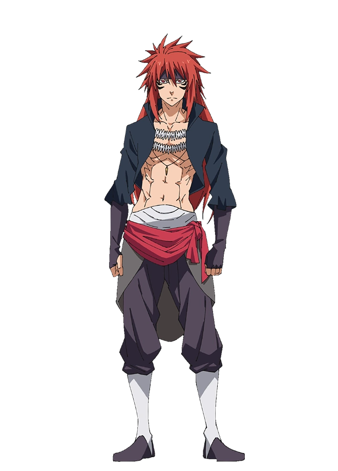

Sobre o Projeto
Magic Adventure
- Jogo criado pelo site chamado Scratch.
- É um jogo com o intuito de ser uma Aventura Mágica, Onde o seu personagem é um Aventureiro iniciante. O Seu mestre é chamado Mister Cat, Ele é um Mago Classe S+. O Aventureiro encontrou O Mister Cat em uma Dungeon conhecida como a Dungeon da Caveira no qual o Cat conquistou derrotando uns dos capangas do Lorde Demonio Guy Crimson, Ela se chamava Velgrynd, os poderes da Velgrynd eram do espaço, Uma magia poderosa nesse mundo. A Magia do Aventureiro era Invocação, Ele poderá invocar qualquer tipo de Criatura, Criaturas Malignas ou Espiritos do bem. O Poder do Guy Crimson, É Extremamente poderosa, podendo cortar até mesmo o Espaço, ou melhor dizendo, O Universo inteiro. Guy Crimson é originalmente um Demônio Progenitor, sendo este o de cor vermelha. Seu nome verdadeiro é Rogue, porém, após ser invocado ao mundo real e exterminar um país inteiro, Guy pôde autonomear-se, inspirando-se nos gritos de suas vítimas e, então, deu origem ao nome Guy Crimson. E Assim outros Demônios foram aparecendo e se tornando Lordes Demônios, tendo a si seu próprio Reino Para Governar, Entre eles existem mais 7 Lordes Demônios, São eles Milim com poder de Dragão, Ramiris com poder da Rainha das Fadas, Dragule com poder de Gigante, Ruminas Valentine com o poder de Vampiro, Dino com o poder do Rei Adormecido, Leon Cromwell com o poder de Héroi, E o Rimuru Tempest com o poder reencarnado.
-
- O Objetivo do Aventureiro é ser um alguem poderoso o suficiente para derrotar o Guy Crimson.
